Stan Kelly-Bootle
bird flocks
- individuals are not aware what the group is doing
- there is no leader
- the forms of the group are complex but they are based on a small number of simple rules on “bird level”:
- watch what your neighbours are doing
- have a tendency towards the center
- avoid incoming birds
bird flocks
emergence of complexity
- simple rule at a low level
- organized complexity at higher levels
- resembles the Aristotelian:
- “ἀλλ΄ ἔστι τι τὸ ὅλον παρὰ τὰ μόρια͵ ἔστι τι αἴτιον”
- (the whole is greater than the sum of its parts)
Complex systems can appear which are based on a great number of simple/small interactions
termite nest - 2 levels

an “organism” with clear and logical behaviors on two levels:
- termite level:
- each termite has its needs
- each termite has its abilities
- each termite reacts to pheromones that influence
- its behaviors individually
termite nest - 2 levels
- nest level - a city with:
- factory
- defences
- cleaning crews
Complex systems can appear which are based on a great number of simple/small interactions
termite nest
- not the result of macro-organization
- a queen is a queen only in name
- no central planning
- no hieararchy
- a by-product of the egoistic behaviours of individuals on a local level
- sum of all these behaviours creates a complex macro-organism
consciousness
- the perception that we have senses
- the easy & hard problem of consciousness
- why aren't we zombies?
- it's all the result of emergence of complexity:
- coming from the interaction of neurons at a local (microscopic) level
emergence in society
- “far left” idea during the 50's
- “visionary” during 1970-1990
- today there are many examples of it on the internet and it's becoming more and more acceptable
- NSA wants to predict revolutions through Twitter
- Google predicts flu spreads 15 days faster than the centers of disease control
- Big Data
Advantages of such systems

- breakup in smaller parts makes them immune to attacks and influence
- examples:
- internet
- Bittorrent vs. Napster
- botnets
emergence in art
- a way of creating organic works of art
- generative art
- simple logic rules lead to levels of complexity at a high level that make them visually appealing
unpredictability
- up to now we do it with
random ( ) - there are more subtle ways
- we could write simple algorithms that lead to unpredictable complexity
- in programming we achieve it with the use of many agents (with arrays & object oriented programming)
a variable in memory
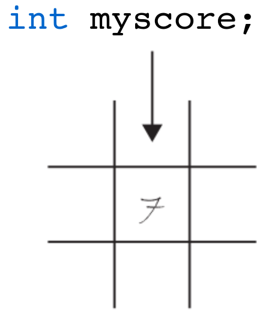an array in memory
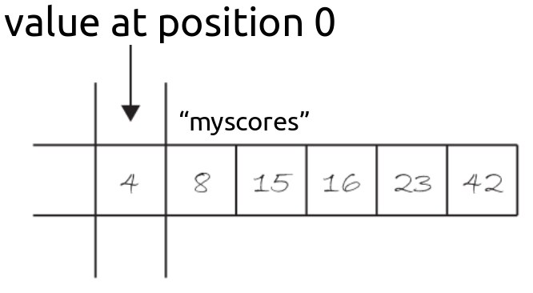 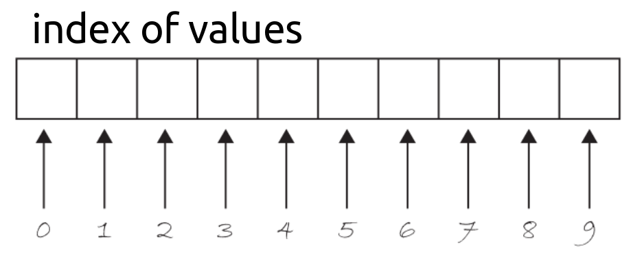how do we declare an array?
int [ ] myScores = new int [30];
...other examples
float[] myGrades = new float[15];
int[] myExpenses = new int[365];
int number = 10;
boolean[] mySwitches = new boolean[number];
int pos = 5;
float[] temperatures = new float[pos*5];
using an array
float[] things = new float [4];
things[0] = 5;
things[1] = 1;
things[2] = 3;
things[3] = 10;
alternative initialization
int [ ] myScores = { 1 , 3 , 15 , 11 , 3 };
- we do not need to declare the number of positions
- nor enter each value one-by-one
What do we do if we have an array with 10.000 elements?
float[] things = new float [4];
things[0] = random(0,200);
things[1] = random(0,200);
things[2] = random(0,200);
things[3] = random(0,200);
.
.
.
things[9999] = random(0,200);
we can use a for { } loop
int[ ] circleX = new int[10000];
for (int pos = 0; pos<10000; pos++)
{
circleX[pos] = random(0,200);
}
bouncing balls
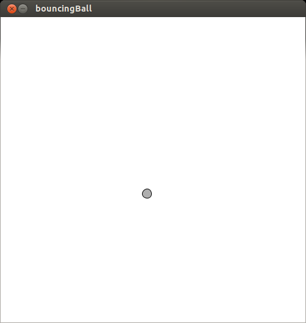 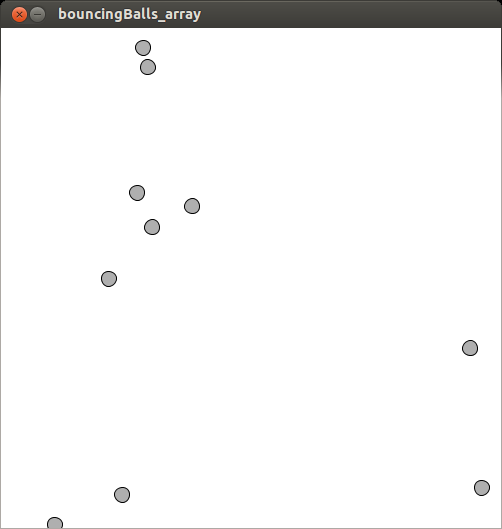bouncing_ball / bouncing_ball_array
interaction with the mouse
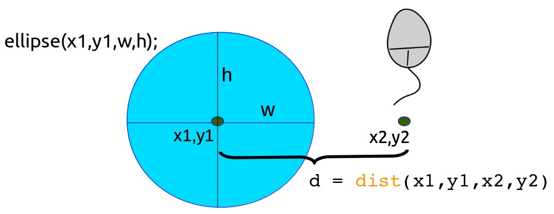what is the value of “d” when the mouse is inside the circle?
State the if-statement.
if (dist (x1, y1, x2, y2) < w / 2)
{
// run code when inside ellipse
}
interaction between elements
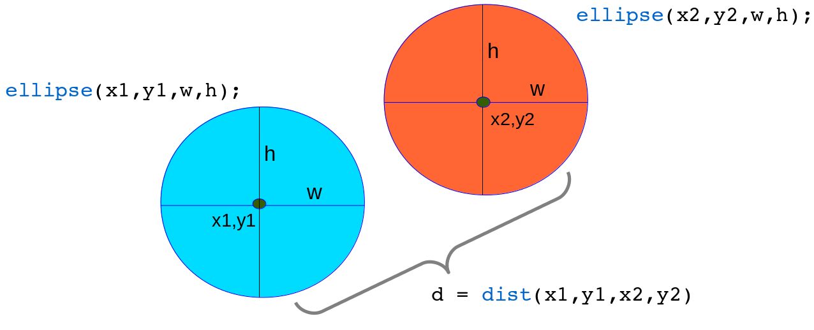What is the value of “d” when one ball touches the other?
State the if-statement.
if ( dist(x1,y1,x2,y2) < (w/2 + w/2) )
{
// run code when inside ellipse
}
value shifting on the array
create an array and initialize the values
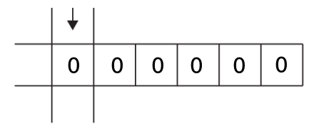shift values at every frame
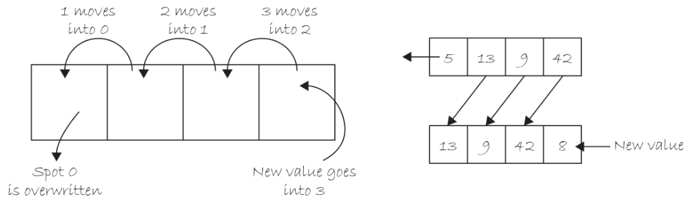ball snake (inside assignments)
ball snake
int[] xpos = new int[50];
int[] ypos = new int[50];
void setup()
{
size(500, 500);
for (int i = 0; i < xpos.length; i++ )
{
xpos[i] = 0;
ypos[i] = 0;
}
}
myArray.length
the variable
int[] xpos = new int[50];
println(xpos.length); // it will print out 50
this way, we don't need to keep track of the size of the array as we did in previous examples.
array functions
etc...
append ( )
String[] sa1 = { "OH", "NY", "CA"};
String[] sa2 = append(sa1, "MA");
println(sa2);
// Prints updated array contents to the console:
// [0] "OH"
// [1] "NY"
// [2] "CA"
// [3] "MA"
subset ( )
String[] sa1 = { "OH", "NY", "CA", "VA", "CO", "IL" };
String[] sa2 = subset(sa1, 1);
println(sa2);
// Prints the following array contents to the console:
// [0] "NY"
// [1] "CA"
// [2] "VA"
// [3] "CO"
// [4] "IL"
String[] sa3 = subset(sa1, 2, 3);
println(sa3);
// Prints the following array contents to the console:
// [0] "CA"
// [1] "VA"
// [2] "CO"
using subset ( ) to remove entries
int extractedVal = 2;
String[] original = { "OH", "NY", "CA", "VA", "CO", "IL" };
String[] rightPart = subset(original, extractedVal+1);
String[] leftPart = subset(original, 0, extractedVal);
String[] result = concat(leftPart, rightPart);
println(result);
2-dimensional arrays
when would we need them?
board game
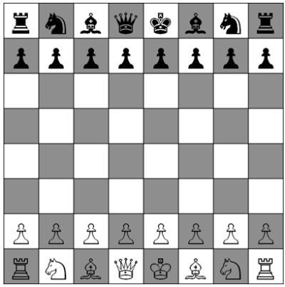2-dimensional arrays
when would we need them?
image information (pixels)
2D arrays: an array of arrays
1D array declaration:
int[] myArray = new int[10]; //a row with 10 entries
2D array declaration:
int cols = 10;
int rows = 10;
int[][] myArray = new int[rows][cols]; //10 rows with 10 places
2D arrays: an array of arrays
1D array use:
for (int i=0; i < myArray.length; i++)
{
myArray[i] = 255;
}
2D array use:
for (int i=0; i < cols; i++)
{
for (int j=0; j < rows; j++)
{
myArray[i][j] = 255;
}
}
2-dimensional arrays visually
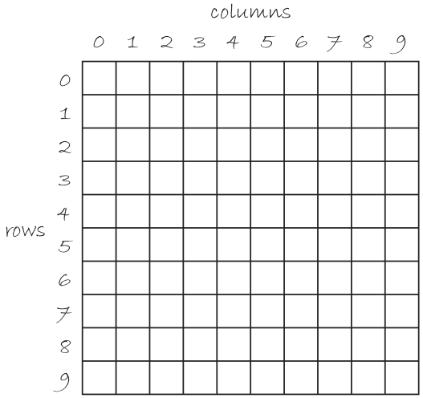sorting algorithms
- an algorithm that puts elements of a list in a certain order
- since the dawn of computing, the sorting problem has attracted a great deal of research
- most-used orders are numerical order and lexicographical order
- efficient sorting is important for optimizing the use of other algorithms
- sorting algorithms are prevalent in introductory computer science classes
bubble sort algorithm
works by repeatedly stepping through the list to be sorted, comparing each pair of adjacent items and swapping them if they are in the wrong order